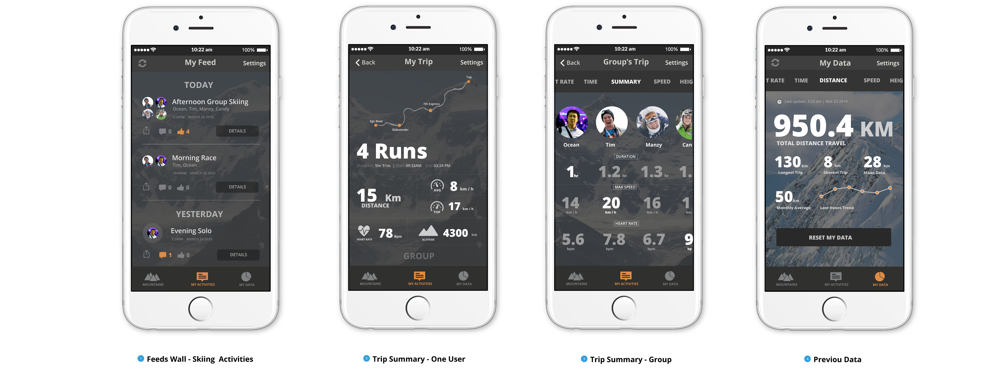

Skiaware
User Interface Design
Skiaware is my first attempt at designing user interface for wearable device, in this case, the brand-new Apple Watch. The objective of this collaborative project is to design a solution for local skiing enthusiasts who enjoy making friends and the experience of skiing in groups. You can find more information via our launch website. Design process are also provided below.
Table of Content
---
1. Experience Map
2. Wireframe
3. Prototype
4. Interaction Design
5. Takeaways
Experience Map
Map out the mountain experience
Before I start the design, I create an user journey framework, which help me to understand users' needs at every potential touchpoint.
Wireframe
For our designs, we wanted to provide users with an interface that won’t disrupt their physical activity. Wearable technology became our answer as users are now able to access everything they need on their wrist. With Skiaware, our team of designers have went through multiple iterations and tests on how to clearly display fitness data at a glance and how the technology can provide new ski experiences that can be enjoyed by you and all your friends.

Prototype
After designing Skiaware, we wanted to add life to our designs. Through the use of high-fidelity mockups and interactive prototypes, our team reflect on how users move through our app and ultimately took one step closer to making Skiaware a reality
Before Experience
With information from our app, user can search the weather and and snow mountain condition ahead. Through social media such as Facebook, users are then able to communicate to set up their ski trip with their friends.
During Experience
When skiing, a mobile phone may not be the best technology for users to track their own fitness and access information about ski passes. That's why we introduced the app to the Apple Watch to provide skiers a convenient and more intuitive user experience in the local winter activity. 
After Experience
With Skiaware, all your fitness data and ski achievements will be automatically updated to your mobile app. You can now easily access all your ski adventures and compare the results with your friends.
Interaction Design
Skiaware is an application designed for users. That’s why we believe it is important to test our designs and refine on the interaction. Via the testing, we refine the use case and design the interaction.
Please see below the breakdown for each interaction
Challenge Your Friends
---
Race through the snow and finally determine who is the best. Is it you or your friends?
Help!
---
With the Apple Watch, you can now send an SOS signal to all your friends when you are in trouble. Ski hard without worry and know Skiaware got your back!
Go on a Quest
---
Take on a ski challenge with your friends and complete the task with top score.
Track Your Journey
---
Pack your bags and get ready to track your progress through your Apple Watch. With the advancement of wearable technology, you can now easily keep up with your fitness and access all your data without pulling out your phone.
Takeaways
Design for wearable is different
My role in the team was to research and analyze the user goals of the application. During this process, I created an user experience map, a user flow chart for the watch interfaces, mock-ups, as well as an interactive prototype using Adobe Photoshop, Illustrator, and Axure. I also made iterations of the mock-ups based on the feedback we got from our user testing sessions. By the end of the project, I was responsible for designing a product webpage which also documents the design process of this project.